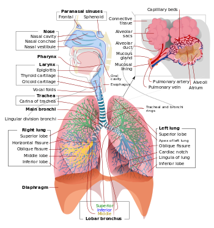
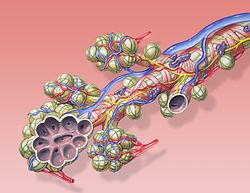

Kiseonik je čovjeku potreban isto toliko koliko i hrana. Za razliku od hrane, kiseonik moramo dobijati neprekidno. Svakog minuta u naše tijelo uđe pet do šest litara vazduha i isto toliko izađe; pri fizičkim aktivnostima ta količina je još veća. Zašto? Disanjem tijelo dobija kiseonik, koji je našim ćelijama potreban radi dobijanja energije. Disanjem se i otklanja ugljen(IV)-oksid koji nastaje u svim ćelijama, kao rezultat njihove aktivnosti. U plućima kiseonik iz vazduha prelazi u krvotok. Krv raznosi kiseonik do svih tkiva, odakle preuzima ugljenik(IV)-oksid i donosi ga do pluća.
Da bi vazduh iz spoljašnje sredine stigao do pluća, treba da prođe kroz disajne puteve. Disajne puteve gradi niz šupljih organa: nos, ždrijelo, grkljan i dušnik. Unutrašnje površine ovih organa obložene su sluzokožom sa trepljastim epitelom. Treplje ćelija i dlačice u nosu zadržavaju čestice prašine i mikroorganizme koji sa vazduhom dospijevaju u organe za disanje.
Vazduh ulazi u tijelo kroz dva otvora na nosu-nozdrve. U njima se nalaze dlačice koje zadržavaju prašinu i mikroorganizme. Čestice prašine i mikroorganizme slijepljene sa sluzi dlačice i treplje epitela pomjeraju prema ždrijelu. Odatle se izbacuju iskašljavanjem ili se slivaju u jednjak. U nosnoj duplji, čija je sluzokoža bogata sluznim žlijezdama i krvnim sudovima, vazduh se zagrijava i vlaži.
Iz nosne duplje vazduh dolazi u ždrijelo-organ u kome se ukrštaju put vazduha i put hrane. Ždrijelo pripada i sistemu organa za disanje i sistemu organa za varenje. Vazduh iz ždrijela ulazi u početni dio dušnika-grkljan, a hrana iz ždrijela u jednjak. Grkljanski poklopac osigurava da hrana ne uđe u dušnik. On se pokreće nezavisno od naše volje. Za vrijeme gutanja grkljanski poklopac zatvara ulaz u dušnik, a meko nepce onemogućava da hrana uđe u nosnu duplju. Prilikom udisanja, grkljanski poklopac je podignut. Od grkljanskih hrskavica najveća je štitasta hrskavica. Kod muškaraca ova hrskavica izaziva Adamovu jabučicu i može se opipati sa spoljašnje strane vrata. Grkljan je organ u kome se stvara glas. U njemu se nalaze sluzokožni nabori-glasne žice.
I u zidu dušnika postoje hrskavice, u obliku potkovice. Dušnik se u grudnoj duplji grana u dvije dušnice-bronhije, koje ulaze u pluća.
Pluća su smještena u grudnoj duplji. Postoje dva plućna krila, koja su režnjevita; lijevo plućno krilo ima dva režnja, a desno tri. Pluća su obavijena dvolisnom plućnom maramicom. Jedan list plućne maramice naliježe na pluća, a drugi na zidove grudnog koša. Listovi su važni i prilikom disanja klize jedan preko drugoga. Pluća imaju sunđerastu građu, meka su i zbog prisustva velikog broja krvnih sudova ružičaste boje.
U plućima, bronhije se granaju u sve uže cjevčice; najuže cjevčice nazivaju se bronhiole. Ove brojne cjevčice čine zamršenu mrežu i završavaju se plućnim mjehurićima-alveolama. Alveole se mogu vidjeti samo mikroskopom. Objavljene su mrežom kapilara kroz koje neprestano protiče krv. Zidovi alveola, kao i zidovi kapilara, građeni su od samo jednog sloja epitelnih ćelija. Alveole su mjesta na kojima se odvija razmjena gasova u plućima. Pluća sadrže oko 300 miliona alveola u svakom plućnom krilu, a njihova površina iznosi 60-80m2.
|  | Respiratorni sistem čovjeka. |
Pluća su elastična, ali ne sadrže mišićno tkivo i nijesu sposobna da se sama šire i skupljaju. Prilikom disanja, pluća prate pokrete grudnog koša. Njega pokreću međurebarni, trbušni mišići i prečaga-dijafragma. Kada se ovi mišići kontrahuju, a dijafragma spusti-grudni koš se širi. Zbog širenja grudnog koša šire se i pluća, a vazduh ulazi u njih(udisaj). U pluća odraslog muškarca može da stane gotovo 6l vazduha. Kada se grudni koš vraća u prethodni položaj, skupljaju se i pluća, i tada izdišemo vazduh u spoljašnju sredinu. Udisaj i izdisaj se naizmjenično ponavljaju od rođenja do smrti. Pokrete trbušnih i međurebarnih mišića, kao i dijafragme, kontroliše centar za disanje.
U stanju mirovanja, svakih 4 do 6 sekundi unesemo oko pola litra vazduha. Trećina ovog vazduha zadrži se u bronhijama i bronhiolama, a preostali dio dolazi do alveola. Iz pluća nikada ne izdahnemo sav vazduh, u njima uvijek ostaje 1-1,5l vazduha.
|  | Razmjena gasova se odvija na nivou alveola i plućnih kapilara. |
Kada vazduh dođe do pluća, kiseonik iz alveola prelazi u krv. Do prelaska kiseonika dolazi zbog toga što je pritisak kiseonika veći u alveolama nego u kapilarima. U krvi se kiseonik vezuje za hemoglobin, gradeći oksihemoglobin.
Istovremeno, iz svih tkiva do alveola stiže krv bogata ugljenik(IV)-oksidom. Ta krv sadrži karboksihemoglobin, jedinjenje koje nastaje vezivanjem ugljenik(IV)-oksida za hemoglobin. Zbog većeg pritiska u krvi, ugljenik(IV)-oksid prelazi u alveole, a izdisajem se izbacuje u spoljašnju sredinu. Razmjena gasova između alveola i plućnih kapilara zove se plućno disanje.
U tkivima se iz oksigenisane krvi oslobađa kiseonik. U isto vrijeme iz ćelija u krv prelazi ugljenik(IV)-oksid, koji krv doprema do alveola. Razmjena gasova između ćelija i krvi, kao i procesi razgradnje hranljivih materija i oslobađanje energije označavaju se kao ćelijsko disanje.
Pri udisanju glasne žice su razmaknute i između njih se nalazi otvor kroz koji prolazi vazduh. Kada govorimo, glasne žice su primaknute i vazduh iz pluća prolazi kroz mali prostor između njih. Pod pritiskom vazduha glasne žice trepere i proizvode glas. Ako su glasne žice jače zategnute, treperenje je brže, a glas je viši. Jačina glasa zavisi i od pritiska vazduha na glasne žice. Treperenje vazduha iz grkljana prenosi se na ždrijelo, nos i usnu duplju u kojoj se uz pomoć zuba, jezika, nepca i usana oblikuju razni glasovi i govor.
Zašto hrčemo?
Zvuk koji nastaje virbriranjem mekog nepca naziva se hrkanje. Iako se hrkanje smatra beznačajnim, a ponekad i zabavnim problemom, može da bude i rani simptom učestalih zastoja disanja u snu.
Zašto štucamo?
Ako se dijafragma naglo zgrči i ne ostavi dovoljno vremena da se glasne žice razdvoje, vazduh udara u zatvorene glasne žice. To izaziva karakterističan zvuk štucanja.